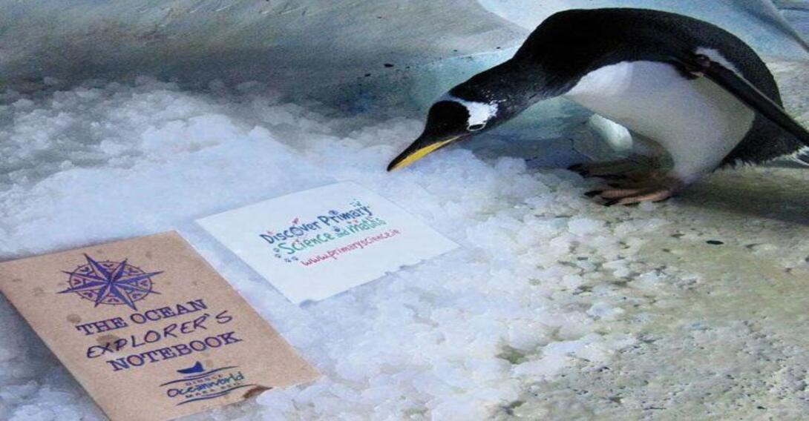
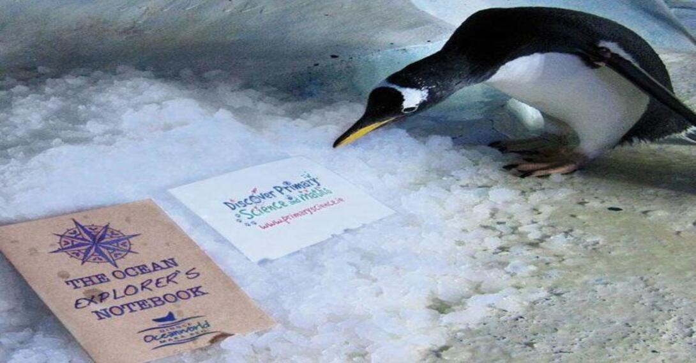
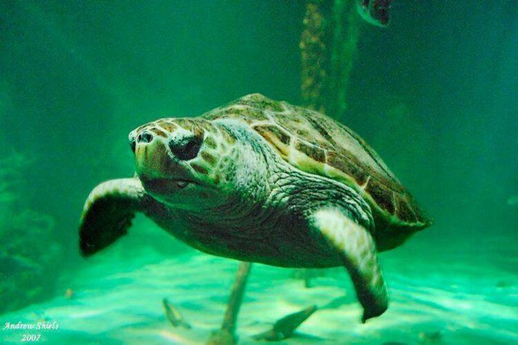
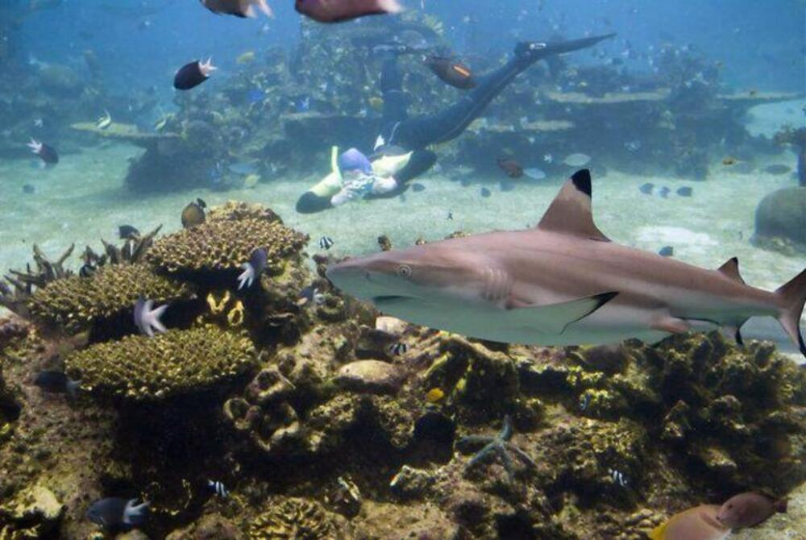
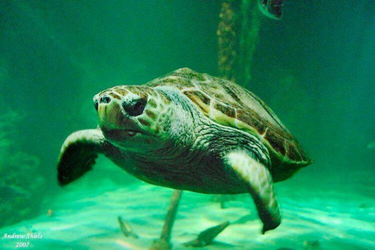
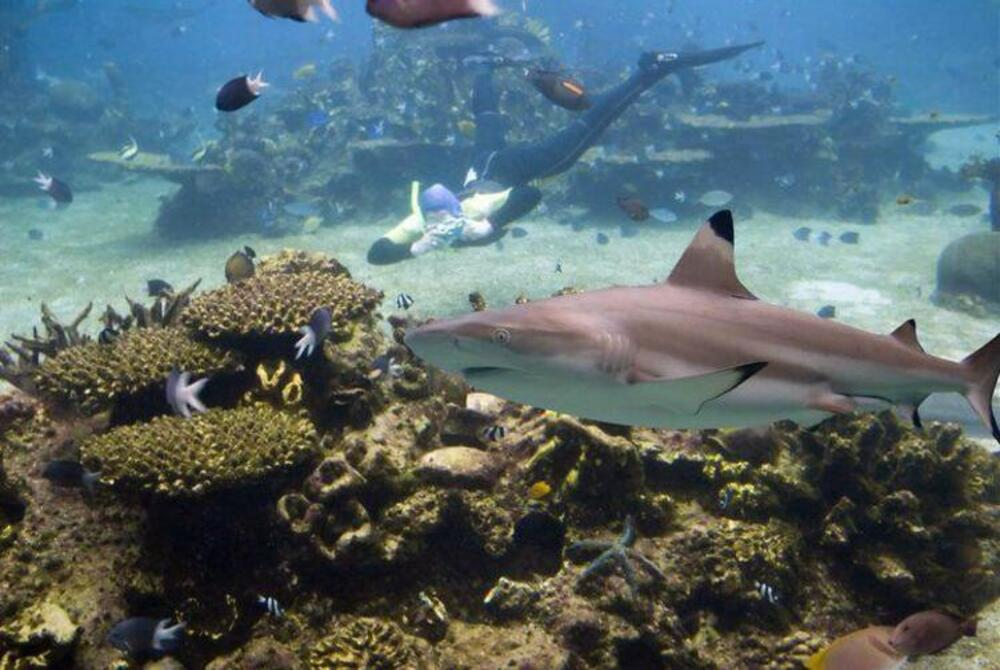
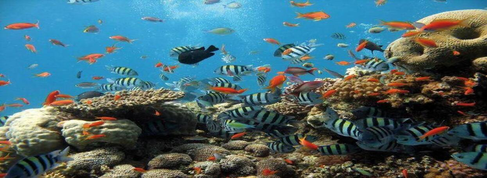
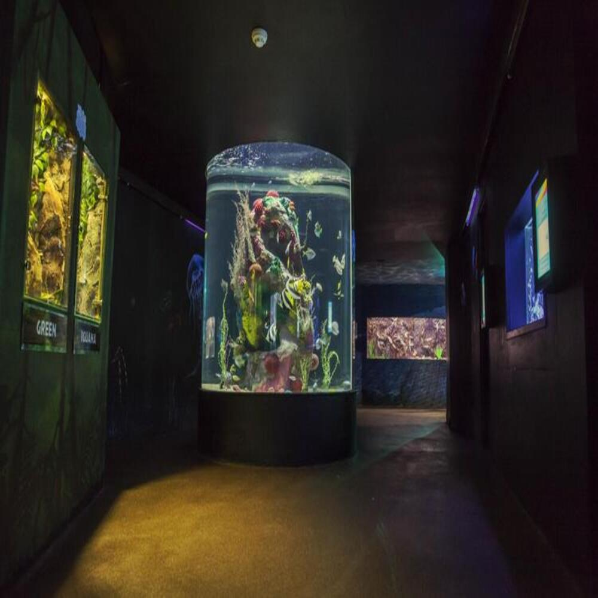
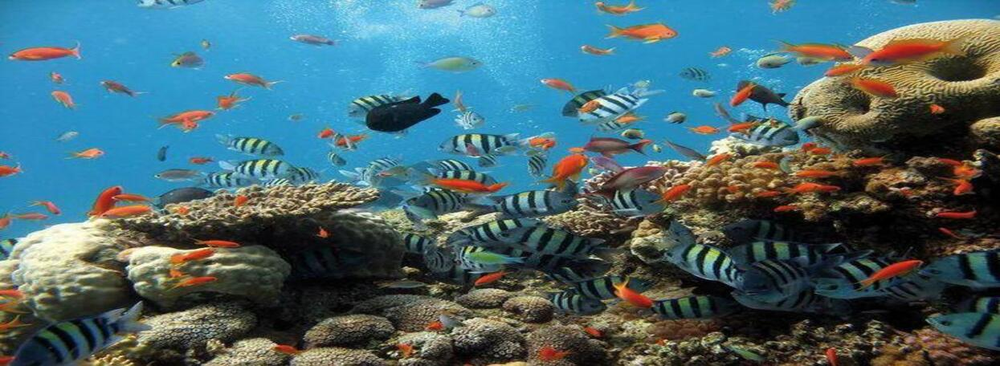
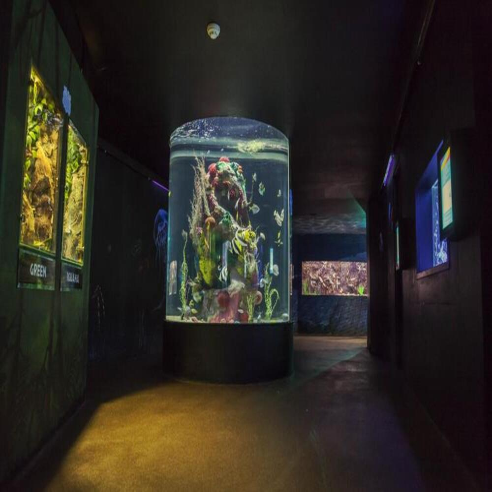

Welcome to the Dingle Aquarium Page
 

 



 



Dingle Oceanworld Aquarium hosts a range of incredible native species and many from around the globe, including sand tiger sharks, gentoo and Humboldt penguins, Asian short-clawed otters, and an abundance of fish. Discover Ireland’s first marine immersive digital experience ‘Deep Atlantic’ and encounter the incredible diversity of life off the Kerry coast. Valid ID required upon tour check in.
-
Prices:
- €20 - Adult Admission
- €14 - Child Admission (3 -16 years)
- €15 - Student Admission
- Free - Under 3'
- CHILDREN MUST BE ACCOMPANIED BY PARENTS Duration:
- 1 hour and 15 minutes Language:
- English